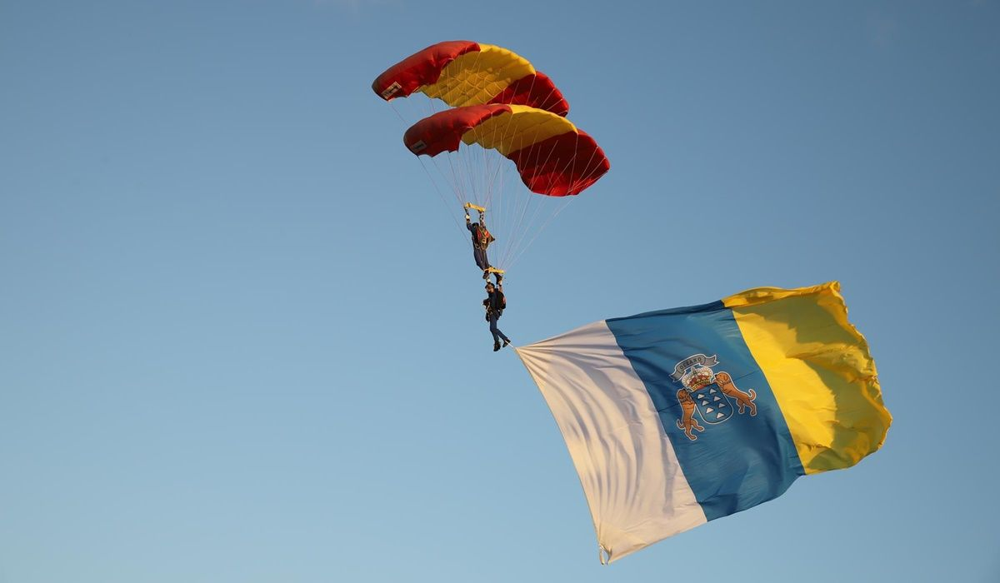
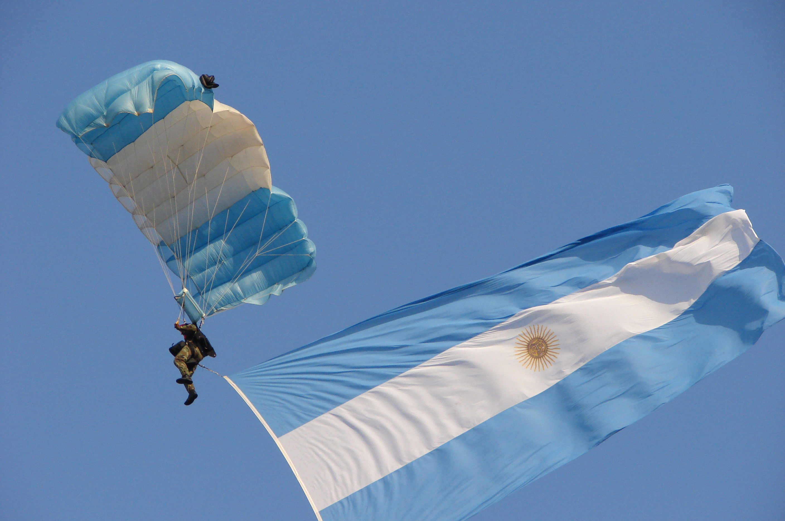

El paracaidismo es la técnica de lanzamiento de seres humanos u objetos desde cierta altura usando un paracaídas para amortiguar el impacto del aterrizaje.
Se puede realizar desde cualquier aeronave como un avión, helicóptero, globo aerostático o desde un objeto fijo elevado a la altura necesaria. En algunos casos el paracaídas es abierto inmediatamente al salir de la aeronave u objeto fijo y en otros casos se realiza una caída libre controlada antes de realizar la apertura manual o asistida dependiendo del caso.


Caída Libre
Trabajo Relativo (Relative Work): varios paracaidistas realizan diversas formaciones o figuras durante la caída libre en posición "panza abajo" o belly.
Estilo Libre (Free Style): una versión de vuelo humano donde se realizan piruetas muy similares a la de gimnasia olímpica.
Vuelo Libre (Free Fly): es la modalidad donde se combinan todas las posiciones, formas y direcciones de vuelo; las 2 posiciones básicas son sentado y cabeza abajo.
Derivas (Tracking): se vuela asumiendo una posición en la que se produce el máximo desplazamiento horizontal.
Sky Surf: con un skyboard que es una tabla conectada a ambos pies y que permite realizar movimientos con muy veloces rotaciones o dar cierta sustentación al practicante.
Traje de alas (Wingfly): se usa un traje especial de aire presurizado, que asemeja su diseño a la ardilla voladora (Pteromys volans), reduciendo la velocidad vertical y desplazando grandes distancias en sentido horizontal.
Salto Tándem: Salto que se realiza con un paracaídas de doble arnés que lleva 2 personas. Modalidad para principiantes. Para iniciarse en el salto en paracaídas la modalidad más recomendable para los novatos es el tándem. En este salto el principiante irá sujeto a un arnés y unido a un monitor que tendrá como cometido que todo vaya bien. En estos casos se emplea un único paracaídas de grandes dimensiones y que tiene la facultad de soportar el peso de dos personas adultas. Con este salto los interesados pueden tener una primera toma de contacto con el mundo del paracaidismo sin asumir casi ningún riesgo porque todo el peso de la maniobra recae sobre el monitor. Tanto la caída al vacío como el aterrizaje, el planeo, la apertura del paracaídas y el descenso corresponderá al profesional mientras que el aprendiz sólo tendrá que preocuparse por disfrutar de una experiencia única.
Salto B.A.S.E.: salto desde plataformas fijas, como antenas, montañas, puentes, edificios, etc.
Deja tu comentario
0308joell
Cómo quisiera intentar Sky Surf!
reb064
Qué actividad interesante...
chiamen5
Alguien sabe cuál es el costo de esta actividad en Argentina?
87bechi
Realicé esta actividad cuando estaba en Brasil, fue una experiencia impresionante y me gustaría realizarlo otra vez
niubi666
Necesito mas info de esto!